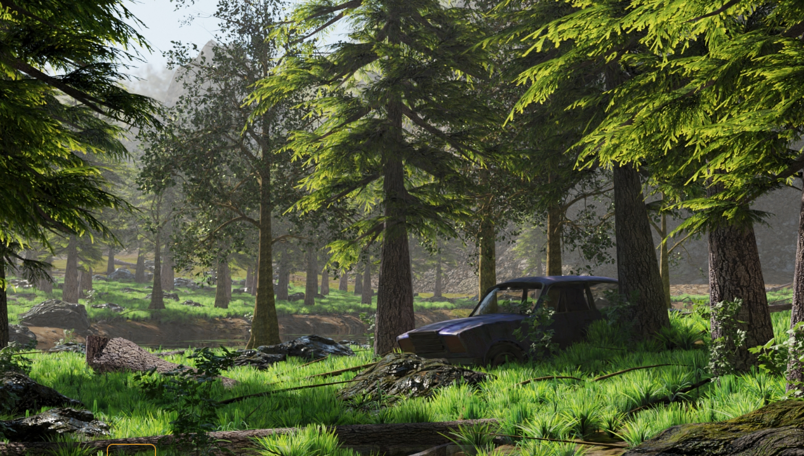

Durante mais um dia comum com um jornal nas mãos você avista um anuncio de carros raros abandonados em galpões, nele apenas tinha que era possível encontrar-los apenas em fazendas distantes, e como um entusiasta decide ir atrás dos carros
Você decide se aventurar na fazenda de seu familiar em busca do carro
Você decide se explorar a fazenda de seus familiares, onde encontra um galpão distante